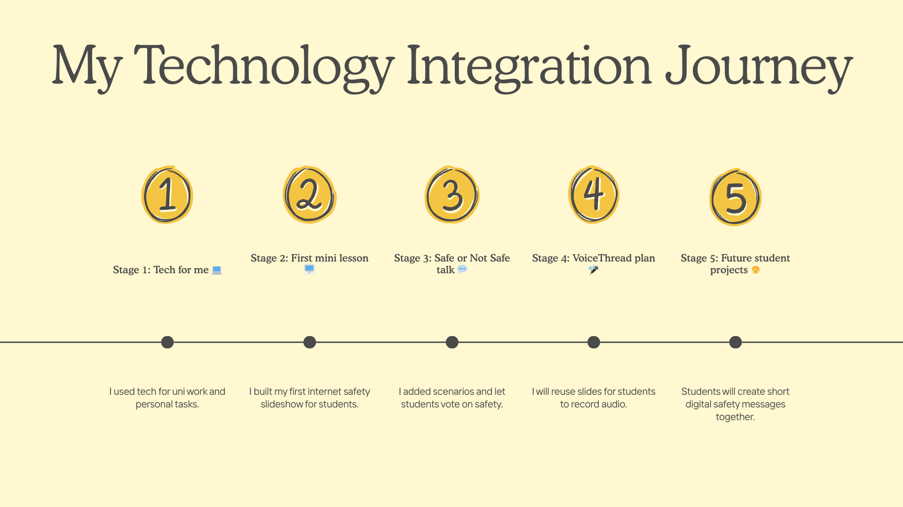

Hello, I am
Terry Benjamin Jr
Software engineer and technology focused educator in training
Scroll to explore the mission, visuals, VoiceThread activity, and video paper.
Blending early learning with safe, thoughtful technology use
This portfolio gathers my core artifacts from Technology and the Young Child. Each piece shows how I use simple digital tools to support young learners, invite their ideas, and keep online spaces safe.
You can move through the sections to see my mission and vision, visual thinking work, an internet safety lesson, a VoiceThread activity, and a brief video reflection.
Focus
Young children as active digital citizens
Lessons are designed so that children move, talk, and decide, not only watch a screen.
Tools
Visuals, VoiceThread, and video
I combine slides, sketchnotes, audio comments, and short videos to support different learning preferences.
Mission and Vision
Who I want to be as a technology using educatorMission Statement
As a technology driven educator and software engineer, my mission is to design learning experiences where children and adult learners use digital tools to think, create, and act safely online. I help learners make sense of technology by connecting it to real problems in their lives, encouraging them to ask questions, test ideas, and share what they discover. I work to create classrooms and training spaces that are inclusive, calm, and interactive, where every learner feels seen and able to participate.
Within the education system I aim to support teachers, schools, and community programmes as they integrate technology in practical ways. I focus on simple, accessible tools that increase student voice, promote digital citizenship, and reduce unnecessary workload for educators. My purpose is to bridge my expertise in software, automation, and artificial intelligence with the needs of learners and teachers so that technology serves people, not the other way around.
Vision Statement
By 2030 I envision myself as a recognised educator technologist in the Caribbean who partners with schools and organisations to build safe, engaging, technology rich learning environments for children and youth. I see myself designing and sharing ready to use lesson ideas, digital citizenship units, and automation tools that help teachers run active classrooms with less stress.
In this future I regularly lead workshops and online sessions where learners use devices, multimedia, and simple artificial intelligence tools to investigate real questions, collaborate across schools, and present their work to authentic audiences. My goal is for every class I support to have routines where students create, reflect, and give feedback, not only consume content.
This vision is ambitious but achievable because it builds on my current strengths in software engineering, automation, and classroom experience, and extends them into sustained partnerships with schools. It aligns with my core values of equity, safety, curiosity, and respect for learners, and it gives me a concrete direction for the decisions I make about my own study, practice, and professional growth.
Pecha Kucha / Vlog
Opening ideas about children and technologyThis presentation introduces my beliefs about technology and early childhood learning and shows how I began thinking about active, visual, and child centered lessons.
Key messages from the Pecha Kucha
- Children need concrete visuals, stories, and repetition.
- Technology should stay simple and purposeful, not flashy for its own sake.
- Young learners benefit when adults model safe and kind digital habits.
Sketch Note
Visual summary of course ideasThis sketch note captures my main takeaways from the course readings in one visual page. It helped me see connections between ideas like active learning, student agency, and tech integration.

Ideas I wanted to keep visible
- Children learn best when they move, talk, and make things, not only listen.
- Technology can extend stories, play, and collaboration when used in small, focused ways.
- Teachers need clear goals first, then tools that match those goals.
Journey Map with Instructional Objectives
How my technology use developed across the courseThe journey map shows how my technology use moved from personal use to a structured lesson on internet safety and then into plans for future student projects.

Learner persona
Primary school students learning about basic online safety and personal information.
Instructional objectives
- Students will name examples of personal information they should keep private online.
- Students will decide if simple scenarios are safe or not safe and explain why.
- Students will share one way they plan to stay safe online after the lesson.
VoiceThread Activity
Audio reflections layered on the journey mapI used VoiceThread to layer audio reflections on top of the journey map and to model how I might invite student voice in a tech supported activity.
How I used VoiceThread
- Added short audio comments that walk through three key stages of the journey map.
- Explained how the mini lesson connected to course readings and active learning.
- Included a prompt where viewers can leave their own audio response about next steps.
Fifteen Minute Lesson and Video Paper
Internet safety lesson and short reflectionInternet Safety Mini Lesson
This lesson introduced primary students to internet safety using a slideshow, a short video, and a safe or not safe discussion activity.
The goal was to keep the pace quick, invite many student responses, and help them connect rules to real online situations.
Video Paper Reflection
In this two minute video I reflect on how active learning felt in practice, how I might adapt the lesson for children who do not read English, and how the technology choices supported engagement.
Thank You For Exploring
I am grateful that you took time to walk through my journey as a technology using educator.
I hope these artifacts show how simple tools, clear structure, and curiosity can help young children feel safe and powerful when they use technology.